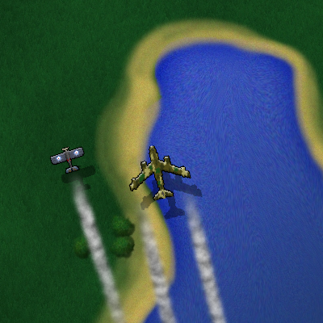
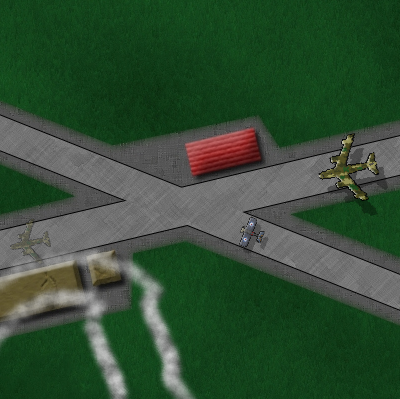
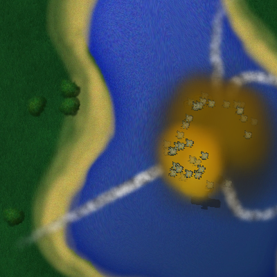
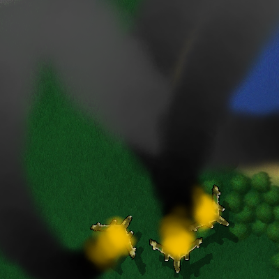

Airport
Airport is a 2D game where you act as an air traffic controller. Every few seconds, a new airplane arrives and needs to be guided to the correct runway of the airport. While this is rather easy in the beginning, the time interval of incoming planes shrinks continuously, turning an accurate coordination of all planes more and more into a challenge.
You lose when two planes collide, and you win... well, never. The goal is to achieve as much points as possible before a collision eventually occurs.
The game itself is controlled by the mouse: Click on a plane and draw a line to set the path it tries to follow. "Tries" because if there are too sharp curves, this will become difficult. Lead the planes to the airport. Once the landing approach begins, you earn some points and the landing plane cannot collide anymore with other planes in the higher air layer.
There are a few other commands for which the keyboard is required:
- F2: New game
- F3: Quit
And here you see some scenes of the game:




Download
Airport is available for Windows and Linux.